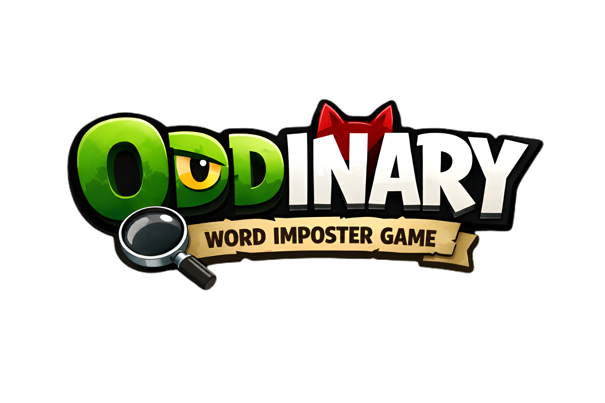

Everyone gets a secret word.
One player gets something different.
Give your clue. Spot the Oddinary.
Learn Oddinary in 30 seconds. Pass the phone around, share clever clues, and hunt the spy.
Pass the phone around. Every player secretly checks their word and keeps it hidden.
Take turns giving a 1-sentence clue. Don't make it too obvious, or the Oddinary will catch on.
Listen carefully to every description. Someone is the hidden Oddinary.
Pass the phone to vote privately in secret, or debate out loud with group voting.
Unmask the Oddinary, calculate points, celebrate victories, and advance to the next round.
Customize each match to match your group's preferences and skill level.
The Oddinary receives a slightly different word (e.g. Burger vs Pizza) and does not know they are the Oddinary. Total confusion and hilarious revelations guaranteed.
The Oddinary receives no word at all and is told directly "YOU ARE THE ODDINARY". They must bluff on the spot and figure out the word from other players' clues.
Play with 2 or more Oddinaries where partners see each other's names on their cards, coordinating their clues to survive the vote together.
Choose between Secret Voting (private in-app voting with automated scoring) or Group Voting (fast real-life verbal voting without phone passing).
In-app Secret Voting awards points each round to determine the Oddinary Champion.
When playing with 2 or more Oddinaries, if an Oddinary votes against another Oddinary to blend in, they earn a +5 bonus points.
If an Oddinary is tied for the highest number of votes, they are considered caught and receive 0 round points.
Group Voting is designed for fast verbal discussions where players debate out loud and reveal the spy directly, making in-app voting calculation optional.
Everything you need to know about playing Oddinary - Word Imposter Game.
Oddinary is designed for groups of 3 to 30 players. It works perfectly for small family game nights, friend gatherings, and large parties.
No downloads or installations are required. Oddinary runs directly in your mobile or desktop web browser.
Yes. Oddinary is a single-device pass-and-play game. You only need one shared smartphone passed around the circle for secret word reveal and voting.
No account is required. Simply enter player names and start playing immediately.
You can set 1 or more Oddinaries based on your player count. The game balances the ratio (1 Oddinary per 3 players) to keep deduction fair and competitive.
In Stealth Mode, the Oddinary receives a word that is closely related to the common word (e.g. Coffee vs Tea), without knowing they are the Oddinary. They only realize something is different by listening closely to other clues.
When playing with multiple Oddinaries, Secret Alliance shows each Oddinary the names of their fellow conspirators so they can coordinate clues and protect each other.